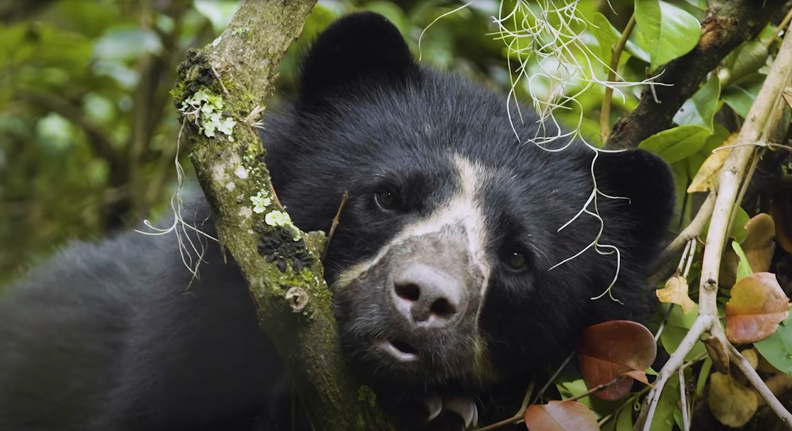
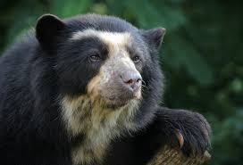

Página principal
 
Oso de Anteojos (Tremarctos ornatus)
Ubicación: Cordillera Oriental, Parque Nacional Natural Chingaza, y otros bosques andinos.
Altura: por encima de los 2000 metros sobre el nivel del mar.
Estado de conservación: vulnerable.
Info adicional